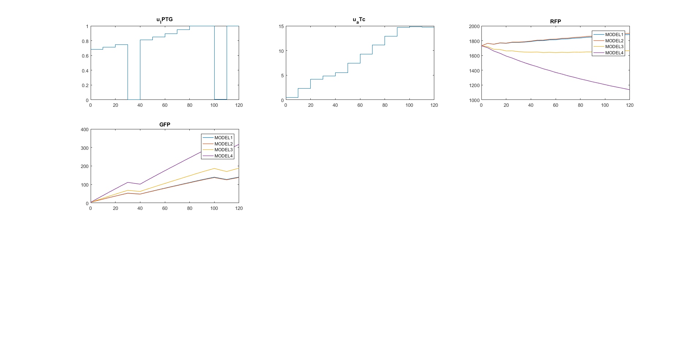

Optimal experimental design for model discrimination
Contents
Load default setting and configure experimental data settings
SBL_config_defaults;
sbl_config.data_dir_name = pwd;
sbl_config.data_file_name = 'toggleSwitch_1.csv';
sbl_config.exp_idx=1:5;
Generate multiple models by enforcing different sparsity coeficients.
sbl_config.sparsity_vec = [0.15 0.2 0.25 0.3];
Generate and fit a family of models
MODELS=SBL_gen_model_family(sbl_config);
04-Sep-2019 12:57:51 | loop iter: 1, generating SBL data 04-Sep-2019 12:58:29 | file: toggleSwitch_1.csv was successfully imported | 5 experiments was selected 04-Sep-2019 12:58:29 | loop iter: 1, running SBL runnging sparsity case: 1/4 runnging SBL on state: 1/2 SBL iter: 1/10 took 4.73022 sec SBL iter: 2/10 took 3.52349 sec SBL iter: 3/10 took 3.32939 sec SBL iter: 4/10 took 3.63609 sec SBL iter: 5/10 took 3.6727 sec SBL iter: 6/10 took 3.43296 sec SBL iter: 7/10 took 3.36409 sec SBL iter: 8/10 took 3.74073 sec SBL iter: 9/10 took 3.49572 sec SBL iter: 10/10 took 3.51851 sec runnging SBL on state: 2/2 SBL iter: 1/10 took 2.78081 sec SBL iter: 2/10 took 2.15577 sec SBL iter: 3/10 took 2.48349 sec SBL iter: 4/10 took 2.08699 sec SBL iter: 5/10 took 1.98315 sec SBL iter: 6/10 took 2.03493 sec SBL iter: 7/10 took 2.00119 sec SBL iter: 8/10 took 2.01045 sec SBL iter: 9/10 took 1.95244 sec SBL iter: 10/10 took 2.00863 sec Elapsed time is 2.126571 seconds. state: x_1 zero_th: 9.49847e-05 dict_num: 5 (0.311915%) state: x_2 zero_th: 9.49847e-05 dict_num: 7 (0.871731%) ODE simulation OK ...
Compute AIC for all models in the family
[AIC,BIC,Chi2,NDATA,NPARS]=SBL_get_AIC_BIC(MODELS);
Execute OED for model discrimination
Optimal experimental design for model discrimination seeks to find the experiment that maximizes the predicted different between the models. Discriminate between the two models with lowest AIC
[~,index]=sort(AIC); modelsAfterOED=OED4SBLdiscrimination(MODELS,sbl_config,index(1:2));
***********************************
AMIGO2, Copyright @CSIC
AMIGO2_R2017a [March 2017]
***********************************
*Date: 04-Sep-2019
------>Pre processing....this may take a few seconds.
------>Checking inputs....
n_exp
exp_type
n_obs
obs_names
obs
exp_y0
t_f
n_s
t_s
u_type
u_interp
n_steps
t_con
u_min
u_max
u
exp_data
...Plot OED results
Optimal experimental design for model discrimination seeks to find the experiment that maximizes the predicted different between the models.
SBL_plotDiscriminationResult(modelsAfterOED); set(gcf, 'Units', 'Normalized', 'OuterPosition', [0, 0.04, 1, 0.96]);
Generate new pseudo experimental data
SBL_workdir; data_file2_original=fullfile(SBL_work_dir,'Data','toggleSwitch_1.csv'); data_file2_pseudo=fullfile(SBL_work_dir,'Data','toggleSwitch_1.csv'); noise_pseudo_data=0.05; add_pseudo_data(modelsAfterOED,noise_pseudo_data,data_file2_original,data_file2_pseudo,'model1');
***********************************
AMIGO2, Copyright @CSIC
AMIGO2_R2017a [March 2017]
***********************************
*Date: 04-Sep-2019
------>Pre processing....this may take a few seconds.
------>Checking inputs....
n_exp
exp_type
n_obs
obs_names
obs
t_f
n_s
t_s
u_interp
t_con
n_steps
u
data_type
noise_type
exp_data
error_data
exp_y0
...